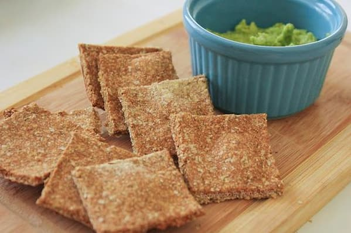
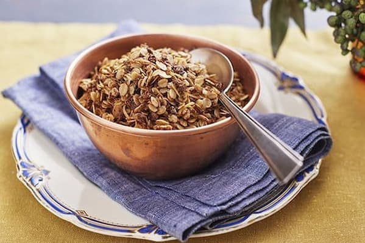
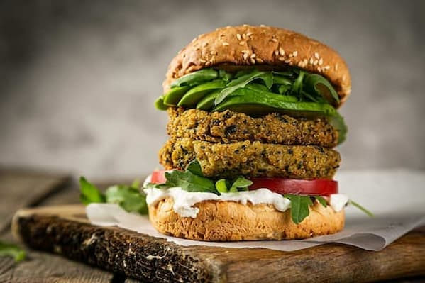

CRACKERS DE GARBANZOS
INGREDIENTES:
- 250 g harina de garbanzos
- 1/2 cdita de té de levadura seca
- 3 cdas soperas de semillas de amapola/chía/sésamo
- 2 cdas soperas de aceite de oliva
- 2 pocillos/120 ml de agua
- Opcional: pizca de sal, pimentón dulce, pimienta, ajo granulado.
PREPARACIÓN: Mezclar en un recipiente la harina de garbanzos con la sal, la
levadura, las semillas y condimentar a gusto. Formar un hueco en el centro, añadir
el aceite y 3/4 del agua.
Empezar a mezclar hasta incorporar todo el líquido, echando el resto si es necesario. Mezclar y amasar.Debe
quedar húmeda pero no muy pegajosa. Dejar reposar 15 minutos.
Estirar la masa sobre una superficie enharinada, dándole grosor a gusto y cortar en crackers. LLevar a horno en fuente aceitada hasta que doren.

GRANOLA CROCANTE
INGREDIENTES:
- Granos de trigo sarraceno
- Semillas (chía, lino, sésamo, girasol, amapolas, calabaza
- Frutos secos (nueces, almendras, castañas, maní sin sal, avellanas)
- Coco rallado/en escamas
- Opcional: arándanos deshidratados/pasas de uva, higos, dátiles, canela
PREPARACIÓN: Tostar ligeramente los granos de trigo sarraceno con un poquito de aceite de coco (o el que desees). Añadir los demás ingredientes y tostar ligeramente moviendo constantemente no mas de 1 minuto. Dejar enfriar. Guardar en frasco de vidrio bien cerrado. Se puede utilizar la granola para preparación de galletitas, barritas de cereal, etc.

HAMBURGUESAS DE LENTEJAS
INGREDIENTES:
- 250 g de lentejas crudas
- 50 g de harina de garbanzos
- 1 cebolla
- 3 dientes de ajo picados
- 1 zanahoria rallada
- Sal, dientes de ajo picados, perejil c/s
- Aceite de oliva extra virgen c/s
PREPARACIÓN: Poner las lentejas en remojo por 8 horas. Cocinar en agua nueva y colar. Entbiar y procesarlas/licuarlas hasta obtener una pasta(pueden quedar lentejas enteras a gusto). En otro bowl, mezclar la cebolla, los ajos picados, la zanahoria rallada, la harina y condimentos a gusto. Mezclar con la pasta de lentejas y formar las hamburguesas a mano o con molde. Reservar en heladera unos 15-20 minutos y cocinarlas en la sartén a fuego medio/bajo con una pizca de aceite.
.jpg)
PESTO DE KALE
INGREDIENTES:
- 1 atado de kale (o albahaca/rúcula
- 1/2 taza de nueces/almendras (previo remojo de 6-7h)
- 2 cditas de levadura de cerveza (opcional)
- 1 diente de ajo cocido/deshidratado (opcional)
- 4 cdas soperas de aceite de oliva extra virgen
- Pizca de sal
- 1/4 cdita de pimienta negra/jengibre
PREPARACIÓN: Con kale: Cocinarlo al vapor por 5 minutos. Procesar todos los
ingredientes hasta formar una pasta (albahaca y rúcula van crudas). Mantener en frasco cerrado de vidrio y refrigerado.